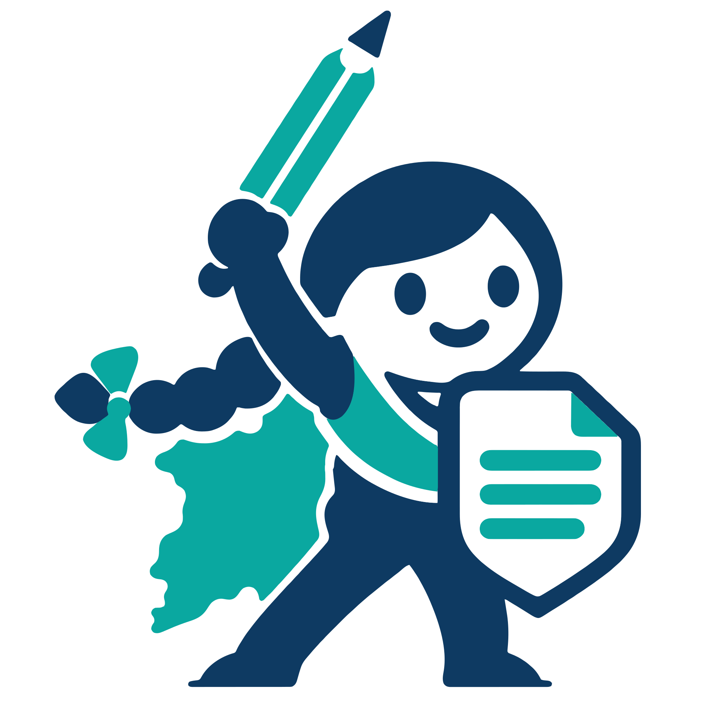

Plantillas gratuitas para hacer tu tutela, derecho de petición, queja, denuncia, solicitud de familia o contrato en Colombia, sin abogado. La aplicación necesita JavaScript; mientras tanto puedes leer las guías y plantillas:
Esta plataforma es gratuita y de orientación general: no presta asesoría jurídica y los documentos son borradores que tú revisas, firmas y presentas bajo tu responsabilidad. Al usarla aceptas el aviso legal y los términos de uso.